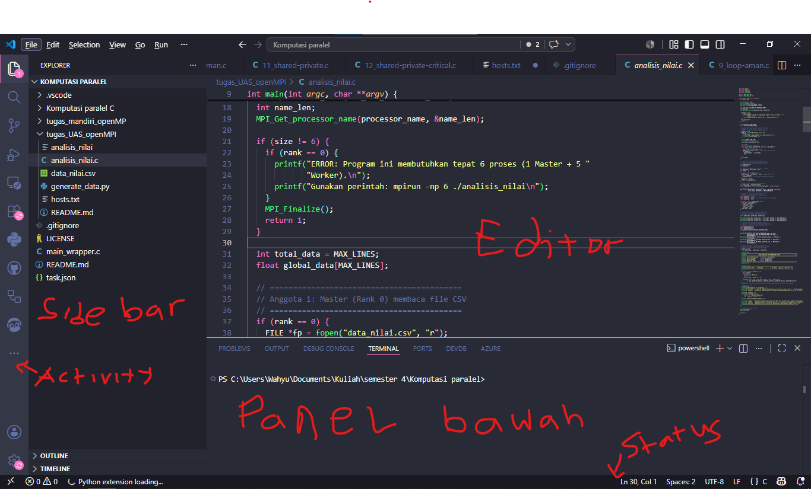

1. Apa itu Visual Studio Code?
Visual Studio Code (VS Code) adalah code editor buatan Microsoft yang ringan, gratis, dan open-source. VS Code mendukung hampir semua bahasa pemrograman dan punya ekosistem ekstensi yang sangat besar.
Di INFONIC, VS Code adalah editor utama yang kamu gunakan untuk mengerjakan semua tugas — dari menulis kode Python hingga menjalankan perintah Git dari terminal terintegrasi.
2. Panduan Instalasi
- Kunjungi code.visualstudio.com dan klik Download for Windows.
- Buka file
.exeyang sudah diunduh. - Pada halaman Select Additional Tasks, centang ketiga opsi berikut:
- Add "Open with Code" action to Windows Explorer file context menu
- Add "Open with Code" action to Windows Explorer directory context menu
- Add to PATH
- Klik Next → Install → Finish.
- Unduh installer untuk macOS dari code.visualstudio.com.
- Ekstrak file
.zipyang sudah diunduh. - Seret file Visual Studio Code.app ke folder Applications.
- Buka VS Code dari Launchpad atau Applications.
Untuk Ubuntu/Debian, unduh file .deb dari situs resmi, lalu jalankan:
sudo dpkg -i <nama-file>.deb
sudo apt-get install -fAtau via Snap:
sudo snap install --classic code3. Pengenalan Antarmuka
VS Code punya 5 area utama yang perlu kamu kenali:
| Area | Letak | Fungsi |
|---|---|---|
| Activity Bar | Panel kiri paling luar | Navigasi ke Explorer, Search, Source Control, Debug, Extensions |
| Side Bar | Kiri, sebelah Activity Bar | Menampilkan detail dari item yang dipilih di Activity Bar |
| Editor Group | Tengah | Area utama tempat menulis kode |
| Panel | Bawah | Terminal, Output, Debug Console, Problems |
| Status Bar | Paling bawah | Informasi baris/kolom, bahasa file, status Git |

Tampilan antarmuka utama Visual Studio Code
4. Penggunaan Dasar
Membuka Folder / Project
Klik menu File → Open Folder... atau tekan Ctrl+K lalu Ctrl+O. Pilih folder project yang ingin kamu kerjakan.
Membuat & Menyimpan File
Di panel Explorer, klik ikon New File. Beri nama file beserta ekstensinya, contoh: main.py, index.php, app.cpp. Simpan dengan Ctrl+S.
Terminal Terintegrasi
Buka terminal internal dengan Ctrl+`. Dari sini kamu bisa langsung menjalankan perintah seperti python main.py, gcc main.c, atau perintah Git.
+ di panel terminal dan pilih Git Bash sebagai shell. Lihat panduan lengkapnya di Troubleshooting.Command Palette
Fitur serbaguna untuk mengakses semua perintah VS Code. Buka dengan Ctrl+Shift+P. Contoh: ketik Format Document, Change Language Mode, atau Reload Window.
5. Shortcut Penting
| Aksi | Windows / Linux | macOS |
|---|---|---|
| Command Palette | Ctrl+Shift+P | Cmd+Shift+P |
| Quick Open File | Ctrl+P | Cmd+P |
| Buka/Tutup Terminal | Ctrl+` | Cmd+` |
| Simpan File | Ctrl+S | Cmd+S |
| Format Code | Shift+Alt+F | Shift+Option+F |
| Toggle Sidebar | Ctrl+B | Cmd+B |
| Duplicate Line | Shift+Alt+←“/←‘ | Shift+Option+←“/←‘ |
| Comment/Uncomment | Ctrl+/ | Cmd+/ |
| Find & Replace | Ctrl+H | Cmd+H |
6. Rekomendasi Ekstensi
Umum & Produktivitas
Python
.ipynb langsung di dalam VS Code.C & C++
.c atau .cpp instan dengan F6 — tanpa ketik gcc manual.PHP
7. Cara Install Ekstensi
- Buka VS Code.
- Tekan Ctrl+Shift+X untuk membuka panel Extensions.
- Ketik nama atau ID ekstensi di kolom pencarian.
- Klik Install pada ekstensi yang kamu inginkan.
- Ekstensi langsung aktif — umumnya tidak perlu restart VS Code.
ms-python.python) untuk memastikan kamu menginstal yang tepat, bukan ekstensi dengan nama serupa dari publisher berbeda.